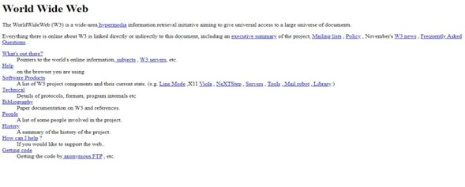
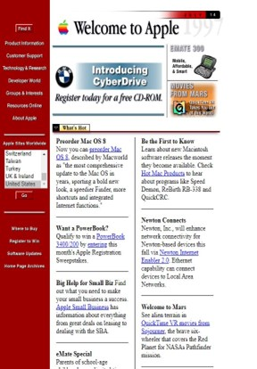
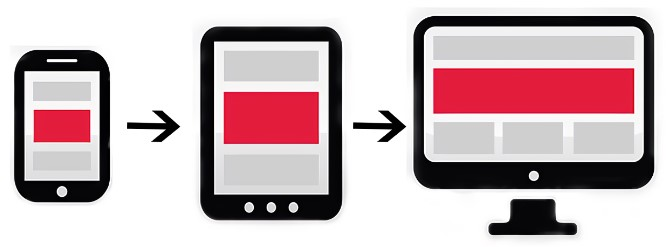
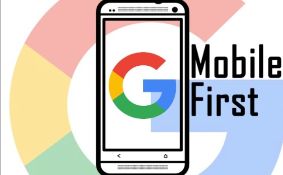
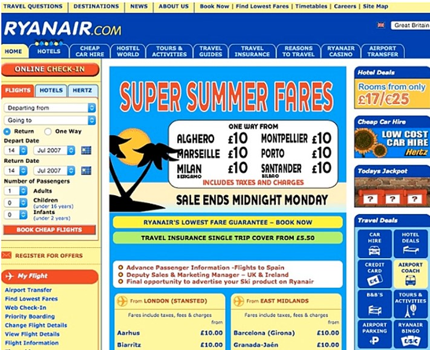
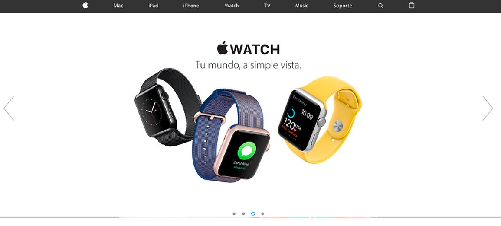
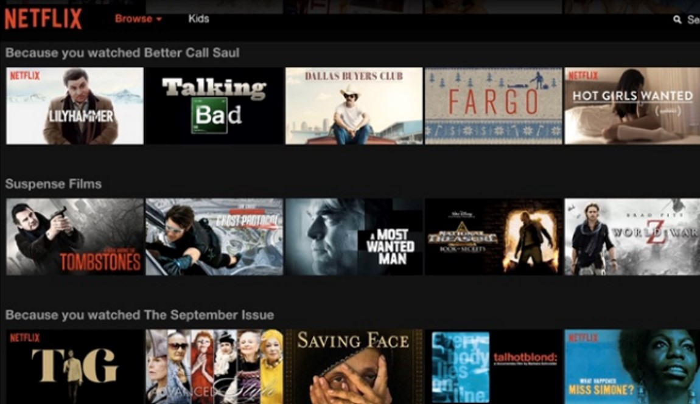

<!DOCTYPE html>
<html>
<head>
	<meta charset="utf-8">
	<meta name="viewport" content="width=device-width, initial-scale=1">
	<title> Evolución diseño web</title>
</head>
<body>
	</pre>
		<div class="container">
			<h1>_______________________  La evolución del Diseño Web  _______________________</h1>
			<h1 style="font:fantasy;"></h1>
		</div>
	<pre>
		<p style="font-size: 28px;" > 
El diseño web, a lo largo de los años, ha ido cambiando.
Esta labor ha evolucionado con el fin de que la usabilidad 
de la web sea cada vez más fácil e intuitiva para los usuarios.
</p>
<div class="container2">
			<h1 style="font: fantasy;">_________________________  Historia del Diseño Web  _________________________</h1>
			<h2>La época oscura en la evolución del diseño web</h2><p style="font-size:18px">La década de los 90 se conoce como la época oscura de diseño web. 
El diseño web se apoyaba en pantallas negras y píxeles monocromáticos. 
Las pantallas estaban dominadas por el texto.
La primera página de Internet fue creada por Tim Berners-Lee en 1991 
para informar sobre la World Wide Web.
Muy pocos pudieron ver la primera página web, ya que el número de conectados 
a la red era aún insignificante. 
Su función se limitaba a la transferencia de datos. Estaban constituidas
principalmente por una columna de texto con inexistencia de archivos multimedia 
y animaciones.
En 1992 aparecieron las Table Base Web que permitían organizar el texto en columnas 
y mantener la información separada a lo largo de la página. Proporcionaban una mayor 
posibilidad de diseño, aunque su manejo era bastante complejo.
Con posterioridad surgió el HML2, entre 1992 y 1994, que permitió incorporar otros 
elementos como <a target="_blank" href="Glosario.pdf">íconos</a>, <a target="_blank" href="Glosario.pdf">botones</a>, <a target="_blank" href="Glosario.pdf">banners</a>, e <a target="_blank" href="Glosario.pdf">imágenes con fondo</a>.</div><h2 align="center">Atracción de usuarios ( 1996 ~ 2000 )</h2><p style="font-size:18px"></p>
<p style="font-size:18px" align="right">

Con la llegada de nuevas herramientas para diseñar páginas web, se ampliaron las 
posibilidades de atracción para que la red ganara usuarios a pasos agigantados.
El número de usuarios seguía aumentando exponencialmente y cada vez más 
empresas se interesaban por ese nuevo negocio llamado internet. 
Innovaciones que aportaron al dinamismo de las páginas web fueron <a target="_blank" href="Glosario.pdf">Flash</a>, 
<a target="_blank" href="Glosario.pdf">JavaScript</a>, <a target="_blank" href="Glosario.pdf">Hojas de esilo CSS</a> y <a target="_blank" href="Glosario.pdf">Frames</a>.

En el 2003 empezó la era de la denominada web 2.0, y con ella llegaron los blogs, 
foros, los chats que incorporan vídeos y audios y las redes sociales. 
Había interfaces más agradables a la vista, por lo que entramos en una fase 
mucho más avanzada en la evolución del diseño web. En esta era se empezó a 
pensar tanto en los usuarios como en los buscadores.
</p><br><br>
<p>Captura de la página web de apple en 1997, utilizando tablas e imágenes para estructurar los contenidos</p>
<div>
	<h2 align="center" style="background-color: rgb(250,141,102);"><a target="_blank" href="Glosario.pdf">MOBILE FIRST</a></h2><p align="left">____________________________________________________</p><p></p><p style="font-size:18px" align="right">Hasta el momento el diseño se centraba 
en los ordenadores de sobremesa hasta que en 2008 la penetración de los 
teléfonos móviles Y con la llegada de todo tipo de aparatos tecnológicos el 
diseño tuvo que adaptarse a estas pantallas y dar prioridad al ámbito responsive.
Esto conlleva a realizar diseños que se adecuen y funcionen en toda la variedad 
de dispositivos digitales. Esto fue un gran reto que se hizo posible gracias 
al uso de grillas y de framework.  La primera mejora que se realizó fue pensando <p align="left">__________________________________________________</p></p><p style="font-size:18px" align="left">en las columnas, por lo que se definió el sistema de rejilla. Este sistema se continúa
utilizando en la actualidad. 
Se encontró una forma nueva de presentar al usuario un sitio web, con un mismo contenido,
pero con diferentes diseños dependiendo del tamaño del dispositivo. 
Gracias a ello podemos utilizar imágenes que ocupen todo el ancho de la pantalla, y esto
hace que se empiecen a diseñar webs más minimalistas, limpias y sencillas. Debido a esto 
el contenido vuelve a tener el protagonismo.
Dejamos atrás los efectos de sombra y toman más importancia las fotografías y las 
tipografías, por lo que parece que nos vamos a los inicios de la evolución del diseño web.
<ul><li><a target="_blank" href="Glosario.pdf">Multimedia</a></li><li><a target="_blank" href="Glosario.pdf">Redes sociales</a></li><li><a target="_blank" href="Glosario.pdf">Contenidos interactivos</a></li><a target="_blank" href="Glosario.pdf">Dispositivos móviles</a></li><li><a target="_blank" href="Glosario.pdf">Cloud computing</a></li></ul></p>
</div>
<h2 align="center" style="background-color: rgb(250,141,102);">Características evolutivas</h2><p align="left">
<h3 align="center">   DISEÑO</h3>

<p style="font-size:20px" align="center">Por principio, el diseño de las páginas 
web eran muy confusas ya que estaban 
cargadas de información y contenido 
multimedia. 
Hoy en día nos encontramos con diseños 
minimalistas, diseños atractivos, 
ordenados y mucho más fáciles de navegar.</p>
<h3 align="center">FUNCIONALIDAD</h3>
<p style="font-size:20px" align="center">Antes los sitios web se utilizaban 
exclusivamente como una tarjeta de 
presentación y básicamente lo que 
compartías en ella era texto lleno de 
información sobre tu negocio, con la 
evolución del diseño web, hoy se puede 
ofrecer productos o servicios directamente 
en la página. </p>
<h3 align="center">PÁGINAS RESPONSIVAS</h3>
<p style="font-size:20px" align="center">Todos sabemos que los dispositivos móviles 
revolucionaron nuestro diario vivir y en 
las páginas web también influyeron 
obligando a crear páginas responsivas (páginas 
que adaptan el tamaño del contenido acorde 
con el dispositivo donde se visualiza la página). </p>
<br><br><br><br><br>
<h3 align="center">PERSONALIZACIÓN</h3>
<p style="font-size:20px" align="center">Sabemos que el comportamiento 
de las personas en cada país es diferente, 
así como sus gustos y comportamientos 
al navegar en Internet, por lo que la 
tendencia es personalizar las páginas de acuerdo 
al país, el mejor ejemplo para ver esto es la 
página de Netflix, independientemente de cambiar 
el lenguaje, cambiar los íconos y la manera de expresarse 
en el texto, el poder hacer recomendaciones de 
acuerdo a los últimos títulos de películas o series 
que has visto genera una experiencia sin igual en ésta 
plataforma que te motiva a seguir usándola. </p>


<h1 style="font: fantasy;">-        ______________________________  FORO ______________________________</h1>
<p style="font-size: 20px">Como se ha observado a lo largo del artículo, el diseño web ha evolucionado de una forma abismal desde
la década de los noventa hasta hoy. La aparición de los distintos dispositivos electrónicos ha marcado, 
y seguirá haciéndolo, la evolución del diseño web. Ahora las páginas web deben ser responsive y cargar ágil 
y eficientemente centrándose en visualizar el contenido que es realmente útil aportando valor agregado al 
usuario, se han adaptado a nuevos formatos y características acorde con el comportamiento del usuario. 
Hoy en día el usuario tiene la disponibilidad un portal dentro de Internet permitiendo la publicidad de 
negocios, uno de los objetivos es que el usuario, desde cualquier lugar esté actualizado de los temas de su 
interés, así pues, los usuarios seguirán evolucionando y el diseño web también. Las aplicaciones y las 
funciones interactivas marcarán la evolución y todo el mundo estará cada vez más conectado. 

<p style="font-size:25px" align="left"><p>¿Recuerdas cuál fue la primera página web que visitaste?               ¿Cuál crees tú que serán los siguientes cambios?
	Tu respuesta: <input type="text" name="Texto 1" id="tx" width="1000" align="center">   <button onclick="accion()" id="b1">Submit</button><br><br>
	Respuesta: &nbsp;<output id="Out1"></output>

</p>

<p align="center" style="background-color: rgb(250,141,102);">Elaborado por: Andrea Carolina Forero Monroy
Programación de Nuevas Tecnologías
Universidad de la Sabana
ID: 280518
2023</p>

<h1>REFERENCIAS</h1>
<div>
02 - HTML y css. (s/f). Google Docs. Recuperado el 13 de febrero de 2023, de <a target="_blank" href="https://docs.google.com/presentation/d/1dzk0FlkWoheiAIWvZWQl7_TvKr0Kcs39aZ4QpYb6DF4/edit"><p>https://docs.google.com/presentation/d/1dzk0FlkWoheiAIWvZWQl7_TvKr0Kcs39aZ4QpYb6DF4/edit</p><a\>	
</div>
<div>
Baena, M. R. (2019, diciembre 19). ¿Sabes cuál ha sido la evolución del diseño web? App&Web. <a target="_blank" href="https://www.appandweb.es/blog/evolucion-diseno-web/"><p>https://www.appandweb.es/blog/evolucion-diseno-web/</p><a\> 
</div>
<div>
Historia del Diseño Web. (2021, marzo 9). Webtematica. <a target="_blank" href="https://webtematica.com/historia-del-diseno-web"><p>https://webtematica.com/historia-del-diseno-web</p><a\> 
</div>
<div>
Manual de HTML. (s/f). Desarrolloweb.com. Recuperado el 13 de febrero de 2023, de <a target="_blank" href="https://desarrolloweb.com/manuales/manual-html.html"><p>https://desarrolloweb.com/manuales/manual-html.html</p><a\> 
</div>
<div>
Merino, J. E. (s/f). La evolución de las páginas web a través del tiempo. Black-n-orange.com. Recuperado el 13 de febrero de 2023, de <a target="_blank" href="https://inbound.black-n-orange.com/blog/la-evolucion-de-las-paginas-web-a-traves-del-tiempo"><p>https://inbound.black-n-orange.com/blog/la-evolucion-de-las-paginas-web-a-traves-del-tiempo</p><a\> 
</div>
<div>
Ochoa, J. (2016, noviembre 16). La evolución del diseño web. novva_ marketing. <a target="_blank" href="https://www.novvamarketing.com/blog-marketing-digital/evolucion-diseno-web/"><p>https://www.novvamarketing.com/blog-marketing-digital/evolucion-diseno-web/</p><a\> 
</div>
<div>
Seo, K. W. (2021, julio 2). La evolución del diseño web y su desarrollo. KING WEB SEO. <a target="_blank" href="https://kingwebseo.com/como-ha-sido-la-evolucion-del-diseno-web/"><p>https://kingwebseo.com/como-ha-sido-la-evolucion-del-diseno-web/</p><a\> 
</div>
<div>
Serrat, X. (2019, octubre 30). Diseño web, historia y evolución. Creative Corner | Agència de publicitat; Creative Corner. <a target="_blank" href="https://creativecorneragency.com/es/historia-y-evolucion-del-diseno-web-creative-corner/"><p>https://creativecorneragency.com/es/historia-y-evolucion-del-diseno-web-creative-corner/</p><a\> 	
</div>
<div>
Web Design - The Book. (s/f). The FWA. Recuperado el 13 de febrero de 2023, de <a target="_blank" href="https://thefwa.com/about/web-design-book/"><p>https://thefwa.com/about/web-design-book/</p><a\> 
</div>

	<style type="text/css">

		.container {
		    background-color: rgb(229,88, 9);
		    padding: 20px;
		    opacity: 1;
		}
			
		body{ 
			background-image: url(fondoh.jpg);
			background-repeat:round;
			h1{color: rgba(77,29,3,1.0)}
			

	</style>
	<script type="text/javascript">
			

			function accion()
			{
				var resp= document.getElementsById("tx").value,
				document.getElementsById("Out1").innerHTML = resp

			}
	
</body>
</html>


